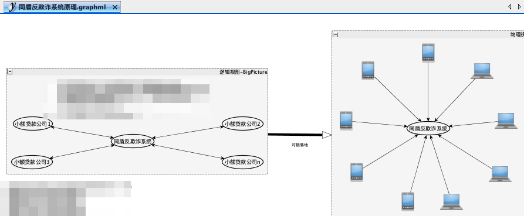

杭州典型ToB技术公司商业模式分析
王福强
按照我个人理解的商业模式优劣排序，挑选杭州本地几家典型ToB技术公司的商业模式分析如下：
同盾
同盾的商业模式是典型的单点切入但却拥有网络效应的商业模式， 这种模式的优势在于， 加入的B端客户越多， 同盾作为网络效应聚合点的威力就会越大，所以发展到今天的独角兽企业，也就不难理解了。
题外话
 记得当年在挖财的时候， 海贝（李治国）应该是要投资同盾的， 洛施奇还帮着问我的意见，我当时就看得很清楚，也画了个示意图，建议也是如上意思， 后来怎么样就不清楚了…
后面的扩展也是在原有基础模式上自然而然的延伸，不做过多赘述。
沃趣
沃趣是老阿里DBA团队创始的数据库软硬一体解决方案提供商， 沃趣历经七年创业历程逐渐摸索出了一套自己的业务模式横向扩展之路，即在Oracle， MySQL和SQL Server三大主力数据库方向上， 通过软硬一体的尽量标品化思维，打造出一个既能准确定位私有云客户又能保持一定横向扩展性的业务模式。
这种模式受制于私有云的阻隔， 无法实现双向甚至多向连接的网络效应，但却依然可以保持很好的横向扩展能力，所以， 辅助于阶段性的正确的战略决策， 沃趣将来也是一个很有价值的公司。
如果用架构图来描绘， 沃趣应该是将数据库整体方案尽量标品化， 从而完成业务模式的横向扩展：
当然， 沃趣在此基础上依然会尝试打破旧有的数据库的烟囱架构，去做更加深入的资源整合和弹性扩展，为了让各项资源合理利用， 会围绕数据库打造一系列的周边产品和生态， 这应该是沃趣现在和将来要持续努力的大势。
端点
当然， 端点已经被阿里收购了，这里只是借用一下它的模式来进行分析说明：
端点我看到的是服务大B的总体IT解决方案提供商， 本质上是一种高端外包，其实选择这种模式我感觉可能也有一些“宿命”论的感觉在里面， 因为我也是架构师出身，我也折腾公司，所以， 多少能够理解作为一个架构师出身的创始人为什么会最终走上这条商业模式之路。
其实我们不是不清楚聚焦的重要性，但我一直强调的一个点就是， “架构师的专业能力是连接， 是关注Big Picture和整体”， 这种特质就会导致说， 优秀的架构师创业，往往不是不想聚焦，而是在自己的依赖路径和特质上， 不得不最后走上一条纵览全局之路：
- 如果作为企业内部员工，那么就是构建企业自己的IT整体解决方案；
- 如果是作为第三方IT解决方案提供商，那就是帮助企业构建适合对方企业的IT整体解决方案， 也就是老话说的系统集成商；
那么， 这会带来什么问题呢？
一家企业往往会采用多家B端企业的方案， 但这些方案之间是不互通的，出于自身利益考虑，自然会选择“建墙”， 而架构师们，为了企业的整体效率，就得作为智者去“建桥”， 也就是通过连接来streamline the whole enterprise，但是， 说实话， 这是一件出力不讨好的事儿， 需要付出更大的努力， 付出更多的精力， 付出更高的智力成本， 换来的却是每次都是非标品需求和工作成果，做完一个（企业）项目无法沉淀可见成品能够再次应用到下一个项目（或者企业）， 所以， 这种模式是最难横向扩展的， 即使能够横向扩展，也是属于“规模不经济”型， 即你可以通过增加人头的方式来扩展，但做多少项目，就得增加相应数量的人头（HC）， 完全没法提高单位人效。
可以说，在我们提到的三种2B技术公司商业模式中，这种是对自己公司来说最不好的模式。
后话
沃趣的创始人陈栋跟我讲过一个他创业初期的小故事，曾经他也想过做数据库之外的生意， 毕竟做了10多年的数据库，多少有倦怠，所以当他看到一个淘宝开放平台的机会的时候就想做一下，但发现需要开发，所以他就去找一个开发合伙人（也就是端点的创始人，好巧😆），当谈完他的想法之后， 被赵沣伟反问了一个问题， “这些我都能做，那你的价值在哪儿？”
“是啊， 我的价值在哪儿？”， 这或许应该是每个创业者都会拷问过自己灵魂的问题。
每个人的成长都会受制于一个路径的依赖，有些时候你不禁会问：这是不是一种宿命？
- 当陈栋发现自己的优势在数据库的时候， 他最终选择创办了沃趣，做软硬一体化的数据库方案提供商；
- 当赵沣伟发现自己的优势是整体和架构， 他创办了端点， 为大企业做内部IT信息系统整体解决方案；
- 当蒋韬发现自己原本做的反欺诈工作就是自己的优势，他创办了同盾， 为企业提供专注的反欺诈服务；
以上均为臆测，如有雷同，纯属巧合。
So， 你的价值和DNA是什么，可能早就注定了你要走什么样的路了吧！
商业模式其实不是你选择的，而是你站在产业链上的位置决定的！
「福强私学」来一个？
「福强私学」, 一部沉淀了个人成长、技术与架构、组织与管理以及商业上的方法与心法的百科全书。
开天窗，拉认知，订阅「福报」，即刻拥有自己的全模态人工智能。